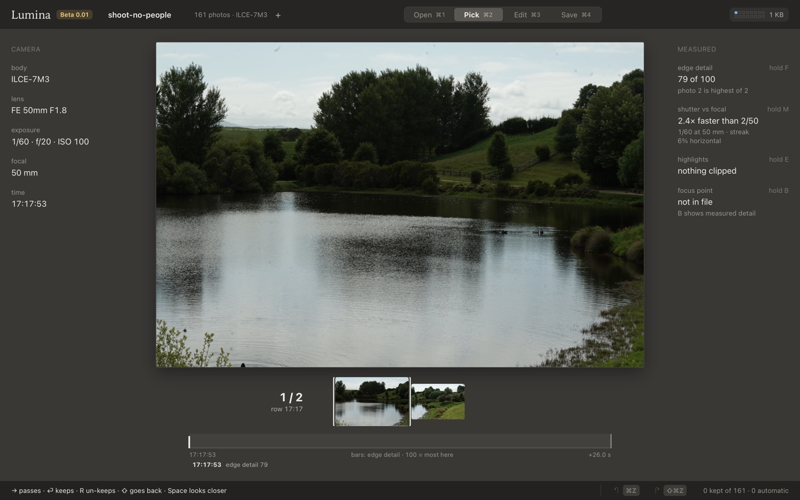
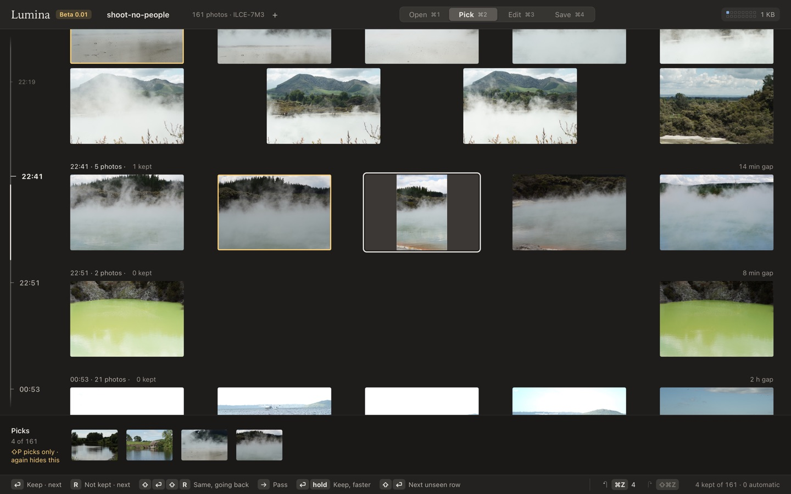
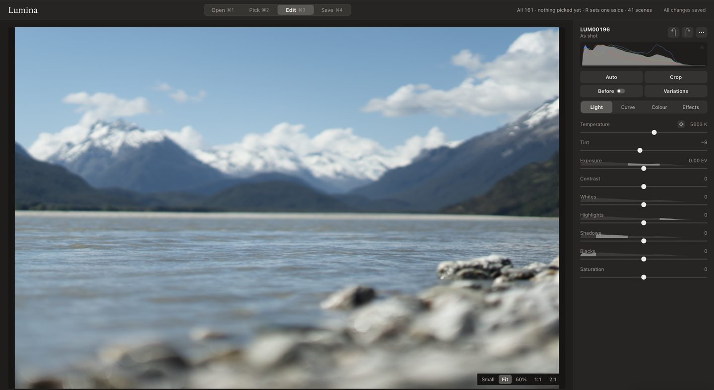
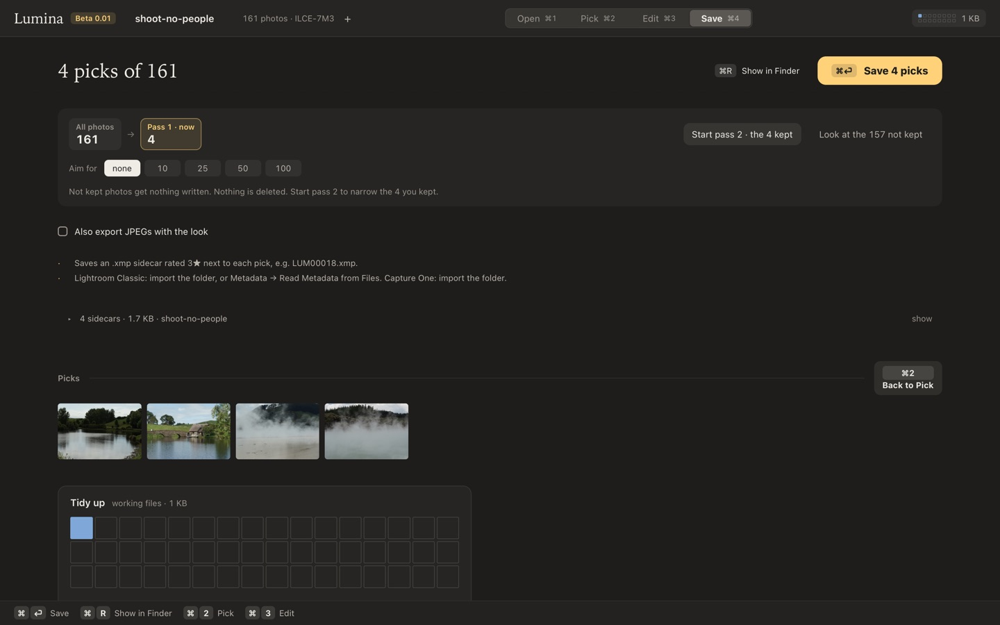
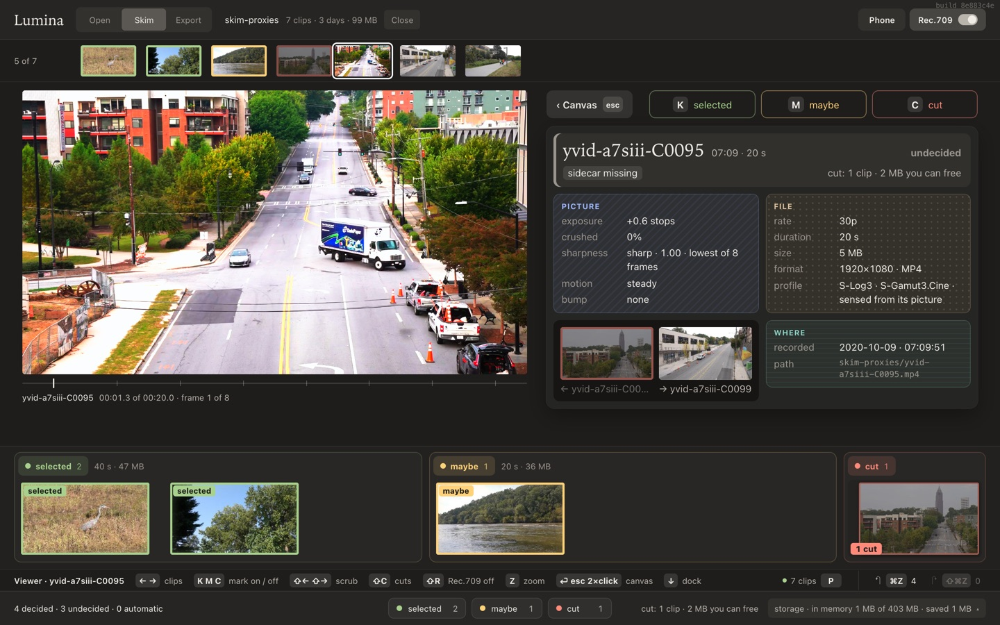
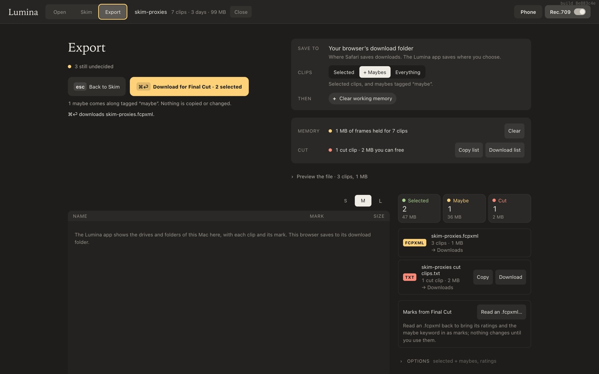
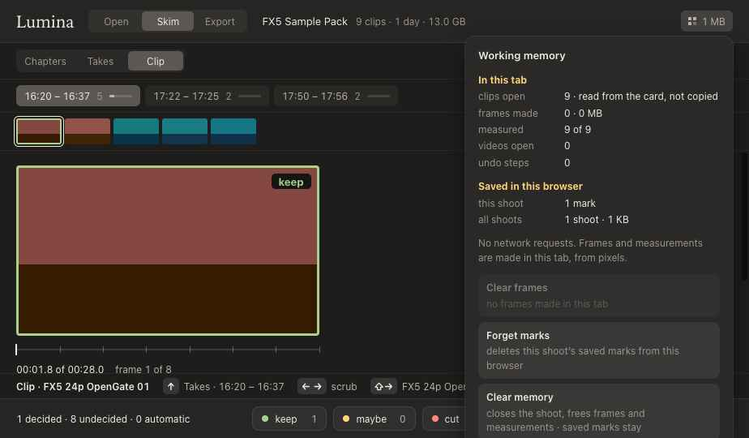

Starts while it reads
The preview already inside the file is enough to decide. The first rows come up while the rest of the folder is still being read.
Photos and clips, on your Mac
Open a folder. Keep what you want with one key. The files stay where they are, and nothing is uploaded.
Mac app: Apple silicon, macOS 15 or later · Web page: the browser you already have · No account

The preview already inside the file is enough to decide. The first rows come up while the rest of the folder is still being read.
Shots taken in quick succession are one unit. Open it, compare the frames, and keep the one you want.
⏎ keeps. R sets a frame aside. Arrows move. Every decision is one undo.
A rating is a small file next to the photo. A clip is never rewritten. Nothing is deleted.
Still
Quickly find what to keep, set a frame aside, and take another look. Edit directly here, or hand the ratings off to Adobe Lightroom. Drag a card or a folder onto the window, or press ⌘O. A memory card is read-only: Lumina never writes to it.
Still reads ARW and DNG. JPEG and HEIC are not read yet. Files stay where they are.
The shoot is laid out in time. Soft frames and blown highlights are flagged. Your place and your decisions are kept with the shoot. Close the app and you are on the same frame.

Still · Edit
Exposure, white balance, contrast and the rest of the look, on the photos you kept. Move a slider and the picture updates in the window. Or skip this and open the folder in Adobe Lightroom. The handoff is the rating, written beside the file. The look stays in Lumina.

Still · Save
Save writes one .xmp sidecar per photo that made a pass, with a standard rating. Photos you set aside get nothing written. Before a sidecar is replaced, Lumina keeps a backup copy. Export copies the raw files or JPEGs, and checks every copy.

Skim
On your phone, in the browser, or on the Mac. Log clips are shown in Rec.709. Mark selected, maybe, or cut, and see how much the cuts weigh. The handoff to Final Cut Pro is the clips you actually want. The clip file is never changed. Cut is the mark. You delete the file yourself.

What gets written
Neither file is a copy of the picture or the clip. Lightroom reads a rating beside the photo. Final Cut reads a list of the clips, still in the folder you opened, and whether each one was selected, a maybe, or cut.
frame.xmp · Still, for Lightroom
One small file, same name as the photo. The rating, and a keyword for the pass. The look you dialled in Edit is not in here.
<x:xmpmeta xmlns:x="adobe:ns:meta/">
<rdf:RDF xmlns:rdf="http://www.w3.org/1999/02/22-rdf-syntax-ns#">
<rdf:Description rdf:about=""
xmlns:xmp="http://ns.adobe.com/xap/1.0/"
xmp:Rating="3">
<dc:subject>
<rdf:Bag>
<rdf:li>Lumina pass 1</rdf:li>
</rdf:Bag>
</dc:subject>
</rdf:Description>
</rdf:RDF>
</x:xmpmeta>thursday.fcpxml · Skim, for Final Cut Pro
The handoff. Final Cut’s own XML, version 1.10, for the clips you kept. copy assets is 0, so Final Cut does not copy them into the library. A selected clip is a favorite. A maybe carries the keyword “maybe”.
<fcpxml version="1.10">
<import-options>
<option key="copy assets" value="0"/>
</import-options>
<resources>
<asset id="a1" name="C0001" format="r1">
<media-rep kind="original-media"
src="file:///Volumes/CARD/CLIP/C0001.MP4"/>
</asset>
</resources>
<library>
<event name="Thursday">
<asset-clip ref="a1" name="C0001">
<rating value="favorite"/>
</asset-clip>
</event>
</library>
</fcpxml>

These are other people’s files, with their own terms. Lumina does not host them. Download a folder, then open it. Nothing in that folder is uploaded.
The files
The web page reads the folder in that tab. The Mac app reads the folder you pick. Neither one sends the photos or the clips anywhere.
There is no sign-in, no analytics of our own, and no advertising. Marks on the web stay in the browser. Marks in the app stay in the app’s folder on the Mac.
Lumina does not write to a memory card, and it does not delete a file. A cut clip is a mark. Emptying space is a separate step you take yourself.
If macOS is set to share crash reports with app developers, Apple may send an anonymous one. That switch belongs to macOS, not to Lumina.
Still reads ARW and DNG, from a folder or a card. JPEG and HEIC are not read yet. Skim reads MP4, MOV and MXF. A clip plays when Safari, or the Mac app, can decode it. Files stay where they are.
No. ARW is the Sony raw file, and it is the one Still has been used with most. A DNG from another camera is read the same way. Skim does not care which camera made the clip.
The web page runs in the browser. It reads the files in that tab, makes its frames there, and keeps your marks there. A file it saves goes to the browser’s download folder. It cannot write next to the original, and it cannot delete anything.
The Mac app is the same screens in their own window. You pick the folder. It writes the .xmp next to the photo, keeps a .lumina-bak before replacing one, and checks a copy against the original. Edit is drawn by the Mac’s GPU. The app makes no network connection.
Safari is the browser Skim is tried in. It plays the 10-bit camera formats, including 10-bit H.264. Chrome plays 8-bit H.264 and 10-bit HEVC, and does not play 10-bit H.264. Firefox has not been the browser this is tried in, and it has the same hole for 10-bit H.264.
On an iPhone or iPad, Chrome and Firefox are WebKit, so they play what Safari plays. The Mac app uses WebKit too, the same engine as Safari.
Save writes a .xmp file next to each photo, with the same name. Lightroom and anything else that reads XMP sidecars pick the rating up from there. Photos you set aside get no file. The raw file is not changed.
An .fcpxml file. It points at the clips where they already are, and carries the marks: favorite for selected, the keyword “maybe” for a maybe, rejected for a cut. Final Cut is told not to copy the media. Import it with File → Import → XML.
Lumina never writes to a memory card. Copy the shoot to the Mac first, then save there.
Nothing is written and nothing is deleted. A later pass can look at only what you kept, and you can go back to the whole shoot. In Skim, cut means “not wanted.” The file stays until you move it yourself.
A Mac with Apple silicon, and macOS 15 or later. The web page needs a current Safari for the camera codecs above. Chrome is fine for 8-bit clips and for Still.
Beta 0.01
Lumina is a Mac app, and a web page for trying the screens. It isn’t on the App Store yet. Tell me the Mac model, the macOS version, and whether you want Still, Skim, or both.